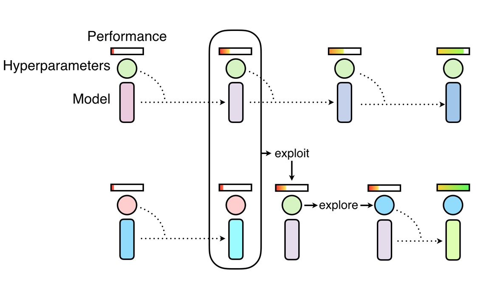

A Guide to Population Based Training with Tune
Contents
A Guide to Population Based Training with Tune#
Tune includes a distributed implementation of Population Based Training (PBT) as a scheduler.

PBT starts by training many neural networks in parallel with random hyperparameters, using information from the rest of the population to refine these hyperparameters and allocate resources to promising models. Let’s walk through how to use this algorithm.
Function API with Population Based Training#
PBT takes its inspiration from genetic algorithms where poor performing members of the population
can exploit information from the top performers the population. In our case, the population
is the set of Tune trials running in parallel, where trial performance is determined by a user-specified
metric such as mean_accuracy.
PBT has two main steps: exploitation and exploration. One example of exploitation is a trial copying the model parameters from a better performing trial. One example of exploration is generating a new hyperparameter configuration by perturbing the current values randomly.
As the training of the population of neural networks progresses, this process of exploiting and exploring is performed periodically, ensuring that all the workers in the population have a good base level of performance and also consistently exploring new hyperparameters configurations. This means that PBT can quickly exploit good hyperparameters, dedicate more training time to promising models and, crucially, mutate the hyperparameter values throughout training, leading to learning the best adaptive hyperparameter schedules.
Here, we will walk through how to use PBT using a MNIST ConvNet training example. First, we define a training function that trains a ConvNet model using SGD.
!pip install "ray[tune]"
import torch
import torch.optim as optim
import ray
from ray import tune, air
from ray.air import session, Checkpoint
from ray.tune.examples.mnist_pytorch import ConvNet, get_data_loaders, train, test
from ray.tune.schedulers import PopulationBasedTraining
def train_convnet(config):
# Create our data loaders, model, and optmizer.
step = 1
train_loader, test_loader = get_data_loaders()
model = ConvNet()
optimizer = optim.SGD(
model.parameters(),
lr=config.get("lr", 0.01),
momentum=config.get("momentum", 0.9),
)
# If `session.get_checkpoint()` is not None, then we are resuming from a checkpoint.
if session.get_checkpoint():
# Load model state and iteration step from checkpoint.
checkpoint_dict = session.get_checkpoint().to_dict()
model.load_state_dict(checkpoint_dict["model_state_dict"])
# Load optimizer state (needed since we're using momentum),
# then set the `lr` and `momentum` according to the config.
optimizer.load_state_dict(checkpoint_dict["optimizer_state_dict"])
for param_group in optimizer.param_groups:
if "lr" in config:
param_group["lr"] = config["lr"]
if "momentum" in config:
param_group["momentum"] = config["momentum"]
# Note: Make sure to increment the checkpointed step by 1 to get the current step.
last_step = checkpoint_dict["step"]
step = last_step + 1
while True:
train(model, optimizer, train_loader)
acc = test(model, test_loader)
checkpoint = None
if step % config["checkpoint_interval"] == 0:
# Every `checkpoint_interval` steps, checkpoint our current state.
checkpoint = Checkpoint.from_dict({
"step": step,
"model_state_dict": model.state_dict(),
"optimizer_state_dict": optimizer.state_dict(),
})
session.report(
{"mean_accuracy": acc, "lr": config["lr"]},
checkpoint=checkpoint
)
step += 1
The example reuses some of the functions in ray/tune/examples/mnist_pytorch.py: this is also a good
demo for how to decouple the tuning logic and original training code.
Checkpointing saving and loading is required for PBT, so we have to both load in the checkpoint if one is provided via session.get_checkpoint(), and periodically save our
model state in a checkpoint via session.report(...) - in this case every checkpoint_interval iterations, which is a config that we set later.
Then, we define a PBT scheduler:
perturbation_interval = 5
scheduler = PopulationBasedTraining(
time_attr="training_iteration",
perturbation_interval=perturbation_interval,
metric="mean_accuracy",
mode="max",
hyperparam_mutations={
# distribution for resampling
"lr": tune.uniform(0.0001, 1),
# allow perturbations within this set of categorical values
"momentum": [0.8, 0.9, 0.99],
},
)
Some of the most important parameters are:
hyperparam_mutationsandcustom_explore_fnare used to mutate the hyperparameters.hyperparam_mutationsis a dictionary where each key/value pair specifies the candidates or function for a hyperparameter. custom_explore_fn is applied after built-in perturbations from hyperparam_mutations are applied, and should return config updated as needed.resample_probability: The probability of resampling from the original distribution when applying hyperparam_mutations. If not resampled, the value will be perturbed by a factor of 1.2 or 0.8 if continuous, or changed to an adjacent value if discrete. Note thatresample_probabilityby default is 0.25, thus hyperparameter with a distribution may go out of the specific range.
Now we can kick off the tuning process by invoking Tuner.fit():
if ray.is_initialized():
ray.shutdown()
ray.init()
tuner = tune.Tuner(
train_convnet,
run_config=air.RunConfig(
name="pbt_test",
# Stop when we've reached a threshold accuracy, or a maximum
# training_iteration, whichever comes first
stop={"mean_accuracy": 0.96, "training_iteration": 50},
verbose=1,
checkpoint_config=air.CheckpointConfig(
checkpoint_score_attribute="mean_accuracy",
num_to_keep=4,
),
storage_path="/tmp/ray_results",
),
tune_config=tune.TuneConfig(
scheduler=scheduler,
num_samples=4,
),
param_space={
"lr": tune.uniform(0.001, 1),
"momentum": tune.uniform(0.001, 1),
"checkpoint_interval": perturbation_interval,
},
)
results_grid = tuner.fit()
Note
We recommend matching checkpoint_interval with perturbation_interval from the PBT config.
This ensures that the PBT algorithm actually exploits the trials in the most recent iteration.
If your perturbation_interval is large and want to checkpoint more frequently, set perturbation_interval to be a multiple of checkpoint_interval (e.g. checkpoint every 2 steps and perturb every 4 steps).
In {LOG_DIR}/{MY_EXPERIMENT_NAME}/, all mutations are logged in pbt_global.txt and individual policy perturbations are recorded in pbt_policy_{i}.txt. Tune logs the following information on each perturbation step: target trial tag, clone trial tag, target trial iteration, clone trial iteration, old config, new config.
Checking the accuracy:
import matplotlib.pyplot as plt
import os
# Get the best trial result
best_result = results_grid.get_best_result(metric="mean_accuracy", mode="max")
# Print `log_dir` where checkpoints are stored
print('Best result logdir:', best_result.log_dir)
# Print the best trial `config` reported at the last iteration
# NOTE: This config is just what the trial ended up with at the last iteration.
# See the next section for replaying the entire history of configs.
print('Best final iteration hyperparameter config:\n', best_result.config)
# Plot the learning curve for the best trial
df = best_result.metrics_dataframe
# Deduplicate, since PBT might introduce duplicate data
df = df.drop_duplicates(subset="training_iteration", keep="last")
df.plot("training_iteration", "mean_accuracy")
plt.xlabel("Training Iterations")
plt.ylabel("Test Accuracy")
plt.show()
Best result logdir: /tmp/ray_results/pbt_test/train_convnet_69158_00000_0_lr=0.0701,momentum=0.1774_2022-10-20_11-31-32
Best final iteration hyperparameter config:
{'lr': 0.07008752890101211, 'momentum': 0.17736213114751204, 'checkpoint_interval': 5}
Replaying a PBT run#
A run of Population Based Training ends with fully trained models. However, sometimes you might like to train the model from scratch, but use the same hyperparameter schedule as obtained from PBT. Ray Tune offers a replay utility for this.
All you need to do is pass the policy log file for the trial you want to replay.
This is usually stored in the experiment directory, for instance
~/ray_results/pbt_test/pbt_policy_ba982_00000.txt.
The replay utility reads the original configuration for the trial and updates it
each time when it was originally perturbed. You can (and should)
thus just use the same Trainable for the replay run. Note that the end result
will not be exactly the same, since only the hyperparameter config changes are replayed,
not the checkpoint loading from other samples.
import glob
from ray import tune
from ray.tune.schedulers import PopulationBasedTrainingReplay
# Get a random replay policy from the experiment we just ran
sample_pbt_trial_log = glob.glob(
os.path.expanduser("/tmp/ray_results/pbt_test/pbt_policy*.txt")
)[0]
replay = PopulationBasedTrainingReplay(sample_pbt_trial_log)
tuner = tune.Tuner(
train_convnet,
tune_config=tune.TuneConfig(scheduler=replay),
run_config=air.RunConfig(stop={"training_iteration": 50}),
)
results_grid = tuner.fit()
Tune Status
| Current time: | 2022-10-20 11:32:49 |
| Running for: | 00:00:30.39 |
| Memory: | 3.8/62.0 GiB |
System Info
PopulationBasedTraining replay: Step 39, perturb 2Resources requested: 0/16 CPUs, 0/0 GPUs, 0.0/34.21 GiB heap, 0.0/17.1 GiB objects
Trial Status
| Trial name | status | loc | acc | iter | total time (s) | lr |
|---|---|---|---|---|---|---|
| train_convnet_87836_00000 | TERMINATED | 172.31.111.100:18021 | 0.93125 | 100 | 21.0994 | 0.00720379 |
Trial Progress
| Trial name | date | done | episodes_total | experiment_id | hostname | iterations_since_restore | lr | mean_accuracy | node_ip | pid | time_since_restore | time_this_iter_s | time_total_s | timestamp | timesteps_since_restore | timesteps_total | training_iteration | trial_id | warmup_time |
|---|---|---|---|---|---|---|---|---|---|---|---|---|---|---|---|---|---|---|---|
| train_convnet_87836_00000 | 2022-10-20_11-32-49 | True | 2a88b6f21b54451aa81c935c77ffbce5 | ip-172-31-111-100 | 61 | 0.00720379 | 0.93125 | 172.31.111.100 | 18021 | 12.787 | 0.196162 | 21.0994 | 1666290769 | 0 | 100 | 87836_00000 | 0.00894547 |
2022-10-20 11:32:28,900 INFO pbt.py:1085 -- Population Based Training replay is now at step 32. Configuration will be changed to {'lr': 0.08410503468121452, 'momentum': 0.99, 'checkpoint_interval': 5}.
(train_convnet pid=17974) 2022-10-20 11:32:32,098 INFO trainable.py:772 -- Restored on 172.31.111.100 from checkpoint: /home/ray/ray_results/train_convnet_2022-10-20_11-32-19/train_convnet_87836_00000_0_2022-10-20_11-32-19/checkpoint_tmp4ab367
(train_convnet pid=17974) 2022-10-20 11:32:32,098 INFO trainable.py:781 -- Current state after restoring: {'_iteration': 32, '_timesteps_total': None, '_time_total': 6.83707332611084, '_episodes_total': None}
2022-10-20 11:32:33,575 INFO pbt.py:1085 -- Population Based Training replay is now at step 39. Configuration will be changed to {'lr': 0.007203792764253441, 'momentum': 0.9, 'checkpoint_interval': 5}.
(train_convnet pid=18021) 2022-10-20 11:32:36,764 INFO trainable.py:772 -- Restored on 172.31.111.100 from checkpoint: /home/ray/ray_results/train_convnet_2022-10-20_11-32-19/train_convnet_87836_00000_0_2022-10-20_11-32-19/checkpoint_tmpb82652
(train_convnet pid=18021) 2022-10-20 11:32:36,765 INFO trainable.py:781 -- Current state after restoring: {'_iteration': 39, '_timesteps_total': None, '_time_total': 8.312420129776001, '_episodes_total': None}
2022-10-20 11:32:49,668 INFO tune.py:787 -- Total run time: 30.50 seconds (30.38 seconds for the tuning loop).
Example: DCGAN with PBT#
Let’s take a look at a more involved example: training Generative Adversarial Networks (GAN) (Goodfellow et al., 2014). The GAN framework learns generative models via a training paradigm consisting of two competing modules – a generator and a discriminator. GAN training can be remarkably brittle and unstable in the face of suboptimal hyperparameter selection with generators often collapsing to a single mode or diverging entirely.
As presented in Population Based Training (PBT), PBT can help with the DCGAN training. We will now walk through how to do this in Tune. The complete code example is on Github.
We define the Generator and Discriminator with standard Pytorch API:
# custom weights initialization called on netG and netD
def weights_init(m):
classname = m.__class__.__name__
if classname.find("Conv") != -1:
nn.init.normal_(m.weight.data, 0.0, 0.02)
elif classname.find("BatchNorm") != -1:
nn.init.normal_(m.weight.data, 1.0, 0.02)
nn.init.constant_(m.bias.data, 0)
# Generator Code
class Generator(nn.Module):
def __init__(self):
super(Generator, self).__init__()
self.main = nn.Sequential(
# input is Z, going into a convolution
nn.ConvTranspose2d(nz, ngf * 4, 4, 1, 0, bias=False),
nn.BatchNorm2d(ngf * 4),
nn.ReLU(True),
nn.ConvTranspose2d(ngf * 4, ngf * 2, 4, 2, 1, bias=False),
nn.BatchNorm2d(ngf * 2),
nn.ReLU(True),
nn.ConvTranspose2d(ngf * 2, ngf, 4, 2, 1, bias=False),
nn.BatchNorm2d(ngf),
nn.ReLU(True),
nn.ConvTranspose2d(ngf, nc, 4, 2, 1, bias=False),
nn.Tanh(),
)
def forward(self, input):
return self.main(input)
class Discriminator(nn.Module):
def __init__(self):
super(Discriminator, self).__init__()
self.main = nn.Sequential(
nn.Conv2d(nc, ndf, 4, 2, 1, bias=False),
nn.LeakyReLU(0.2, inplace=True),
nn.Conv2d(ndf, ndf * 2, 4, 2, 1, bias=False),
nn.BatchNorm2d(ndf * 2),
nn.LeakyReLU(0.2, inplace=True),
nn.Conv2d(ndf * 2, ndf * 4, 4, 2, 1, bias=False),
nn.BatchNorm2d(ndf * 4),
nn.LeakyReLU(0.2, inplace=True),
nn.Conv2d(ndf * 4, 1, 4, 1, 0, bias=False),
nn.Sigmoid(),
)
def forward(self, input):
return self.main(input)
To train the model with PBT, we need to define a metric for the scheduler to evaluate the model candidates. For a GAN network, inception score is arguably the most commonly used metric. We trained a mnist classification model (LeNet) and use it to perform inference on the generated images and evaluate the image quality.
Tip
The inception score uses a trained classification model, which we save in the object
store and pass as an object reference into the inception_score function.
class Net(nn.Module):
"""
LeNet for MNist classification, used for inception_score
"""
def __init__(self):
super(Net, self).__init__()
self.conv1 = nn.Conv2d(1, 10, kernel_size=5)
self.conv2 = nn.Conv2d(10, 20, kernel_size=5)
self.conv2_drop = nn.Dropout2d()
self.fc1 = nn.Linear(320, 50)
self.fc2 = nn.Linear(50, 10)
def forward(self, x):
x = F.relu(F.max_pool2d(self.conv1(x), 2))
x = F.relu(F.max_pool2d(self.conv2_drop(self.conv2(x)), 2))
x = x.view(-1, 320)
x = F.relu(self.fc1(x))
x = F.dropout(x, training=self.training)
x = self.fc2(x)
return F.log_softmax(x, dim=1)
def inception_score(imgs, mnist_model_ref, batch_size=32, splits=1):
N = len(imgs)
dtype = torch.FloatTensor
dataloader = torch.utils.data.DataLoader(imgs, batch_size=batch_size)
cm = ray.get(mnist_model_ref) # Get the mnist model from Ray object store.
up = nn.Upsample(size=(28, 28), mode="bilinear").type(dtype)
def get_pred(x):
x = up(x)
x = cm(x)
return F.softmax(x).data.cpu().numpy()
preds = np.zeros((N, 10))
for i, batch in enumerate(dataloader, 0):
batch = batch.type(dtype)
batchv = Variable(batch)
batch_size_i = batch.size()[0]
preds[i * batch_size : i * batch_size + batch_size_i] = get_pred(batchv)
# Now compute the mean kl-div
split_scores = []
for k in range(splits):
part = preds[k * (N // splits) : (k + 1) * (N // splits), :]
py = np.mean(part, axis=0)
scores = []
for i in range(part.shape[0]):
pyx = part[i, :]
scores.append(entropy(pyx, py))
split_scores.append(np.exp(np.mean(scores)))
return np.mean(split_scores), np.std(split_scores)
We define a training function that includes a Generator and a Discriminator,
each with an independent learning rate and optimizer. We make sure to implement checkpointing for our training.
In particular, note that we need to set the optimizer learning rates after loading from a checkpoint, since we want to use the perturbed config passed to us in config rather than the exact same config as the trial we are exploiting.
def dcgan_train(config):
use_cuda = config.get("use_gpu") and torch.cuda.is_available()
device = torch.device("cuda" if use_cuda else "cpu")
netD = Discriminator().to(device)
netD.apply(weights_init)
netG = Generator().to(device)
netG.apply(weights_init)
criterion = nn.BCELoss()
optimizerD = optim.Adam(
netD.parameters(), lr=config.get("lr", 0.01), betas=(beta1, 0.999)
)
optimizerG = optim.Adam(
netG.parameters(), lr=config.get("lr", 0.01), betas=(beta1, 0.999)
)
with FileLock(os.path.expanduser("~/ray_results/.data.lock")):
dataloader = get_data_loader()
step = 1
if session.get_checkpoint():
checkpoint_dict = session.get_checkpoint().to_dict()
netD.load_state_dict(checkpoint_dict["netDmodel"])
netG.load_state_dict(checkpoint_dict["netGmodel"])
optimizerD.load_state_dict(checkpoint_dict["optimD"])
optimizerG.load_state_dict(checkpoint_dict["optimG"])
# Note: Make sure to increment the loaded step by 1 to get the
# current step.
last_step = checkpoint_dict["step"]
step = last_step + 1
# NOTE: It's important to set the optimizer learning rates
# again, since we want to explore the parameters passed in by PBT.
# Without this, we would continue using the exact same
# configuration as the trial whose checkpoint we are exploiting.
if "netD_lr" in config:
for param_group in optimizerD.param_groups:
param_group["lr"] = config["netD_lr"]
if "netG_lr" in config:
for param_group in optimizerG.param_groups:
param_group["lr"] = config["netG_lr"]
while True:
lossG, lossD, is_score = train(
netD,
netG,
optimizerG,
optimizerD,
criterion,
dataloader,
step,
device,
config["mnist_model_ref"],
)
checkpoint = None
if step % config["checkpoint_interval"] == 0:
checkpoint = Checkpoint.from_dict(
{
"netDmodel": netD.state_dict(),
"netGmodel": netG.state_dict(),
"optimD": optimizerD.state_dict(),
"optimG": optimizerG.state_dict(),
"step": step,
}
)
session.report(
{"lossg": lossG, "lossd": lossD, "is_score": is_score},
checkpoint=checkpoint,
)
step += 1
We specify inception score as the metric and start the tuning:
import torch
import ray
from ray import air, tune
from ray.tune.schedulers import PopulationBasedTraining
from ray.tune.examples.pbt_dcgan_mnist.common import Net
from ray.tune.examples.pbt_dcgan_mnist.pbt_dcgan_mnist_func import (
dcgan_train, download_mnist_cnn
)
# Load the pretrained mnist classification model for inception_score
mnist_cnn = Net()
model_path = download_mnist_cnn()
mnist_cnn.load_state_dict(torch.load(model_path))
mnist_cnn.eval()
# Put the model in Ray object store.
mnist_model_ref = ray.put(mnist_cnn)
perturbation_interval = 5
scheduler = PopulationBasedTraining(
perturbation_interval=perturbation_interval,
hyperparam_mutations={
# Distribution for resampling
"netG_lr": tune.uniform(1e-2, 1e-5),
"netD_lr": tune.uniform(1e-2, 1e-5),
},
)
smoke_test = True # For testing purposes: set this to False to run the full experiment
tuner = tune.Tuner(
dcgan_train,
run_config=air.RunConfig(
name="pbt_dcgan_mnist_tutorial",
stop={"training_iteration": 5 if smoke_test else 150},
verbose=1,
),
tune_config=tune.TuneConfig(
metric="is_score",
mode="max",
num_samples=2 if smoke_test else 8,
scheduler=scheduler,
),
param_space={
# Define how initial values of the learning rates should be chosen.
"netG_lr": tune.choice([0.0001, 0.0002, 0.0005]),
"netD_lr": tune.choice([0.0001, 0.0002, 0.0005]),
"mnist_model_ref": mnist_model_ref,
"checkpoint_interval": perturbation_interval,
},
)
results_grid = tuner.fit()
The trained Generator models can be loaded from checkpoints to generate images of digits from noise signals.
Visualization#
Below, we visualize the increasing inception score from the training logs.
import matplotlib.pyplot as plt
# Uncomment to apply plotting styles
# !pip install seaborn
# import seaborn as sns
# sns.set_style("darkgrid")
result_dfs = [result.metrics_dataframe for result in results_grid]
best_result = results_grid.get_best_result(metric="is_score", mode="max")
plt.figure(figsize=(7, 4))
for i, df in enumerate(result_dfs):
plt.plot(df["is_score"], label=i)
plt.legend()
plt.title("Inception Score During Training")
plt.xlabel("Training Iterations")
plt.ylabel("Inception Score")
plt.show()
Next, let’s take a look at the Generator and Discriminator losses:
fig, axs = plt.subplots(1, 2, figsize=(12, 4))
for i, df in enumerate(result_dfs):
axs[0].plot(df["lossg"], label=i)
axs[0].legend()
axs[0].set_title("Generator Loss During Training")
axs[0].set_xlabel("Training Iterations")
axs[0].set_ylabel("Generator Loss")
for i, df in enumerate(result_dfs):
axs[1].plot(df["lossd"], label=i)
axs[1].legend()
axs[1].set_title("Discriminator Loss During Training")
axs[1].set_xlabel("Training Iterations")
axs[1].set_ylabel("Discriminator Loss")
plt.show()
from ray.tune.examples.pbt_dcgan_mnist.common import demo_gan
with best_result.checkpoint.as_directory() as best_checkpoint:
demo_gan([best_checkpoint])
Training of the MNist Generator should take a couple of minutes. The example can be easily altered to generate images for other datasets, e.g. cifar10 or LSUN.
Summary#
This tutorial covered:
Two examples of using Population Based Training to tune deep learning hyperparameters (CNN and GAN training)
Saving and loading checkpoints and making sure that all hyperparameters are used (ex: optimizer state)
Visualizing reported metrics after training
To learn more, check out the next tutorial Visualizing Population Based Training (PBT) Hyperparameter Optimization for a visual guide to understanding PBT and its underlying behavior.
If you have any questions, suggestions, or run into any problems please reach out on Discuss, GitHub or the Ray Slack!